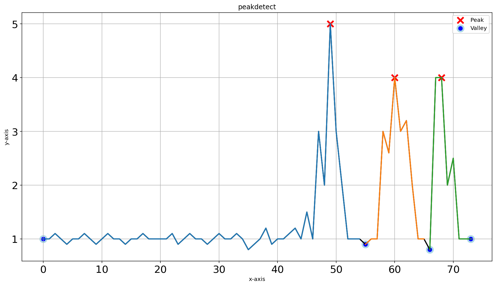

Performance
This section provides comprehensive performance comparisons between different peak detection methods using findpeaks.findpeaks.findpeaks.fit(), demonstrating their effectiveness with various parameter configurations and data characteristics. The analysis includes both small and large datasets, with and without noise, to help users choose the most appropriate method for their specific use case.
Comparison of peak detection methods in one-dimensional data
Small dataset analysis
For the first scenario, we create a dataset containing both small and large peaks to evaluate detection accuracy across different scales. We compare the topology method via findpeaks.stats.topology() and peakdetect method via findpeaks.peakdetect.peakdetect() with and without interpolation via findpeaks.interpolate.interpolate_line1d() to understand the impact of preprocessing on detection quality.
# Import library
from findpeaks import findpeaks
# peakdetect without interpolation
fp_peakdetect = findpeaks(method='peakdetect', interpolate=None, lookahead=1)
# peakdetect with interpolation
fp_peakdetect_int = findpeaks(method='peakdetect', interpolate=10, lookahead=1)
# topology without interpolation
fp_topology = findpeaks(method='topology', interpolate=None)
# topology with interpolation
fp_topology_int = findpeaks(method='topology', interpolate=10)
# Example 1d-vector with mixed peak sizes
X = [1,1,1.1,1,0.9,1,1,1.1,1,0.9,1,1.1,1,1,0.9,1,1,1.1,1,1,1,1,1.1,0.9,1,1.1,1,1,0.9,1,1.1,1,1,1.1,1,0.8,0.9,1,1.2,0.9,1,1,1.1,1.2,1,1.5,1,3,2,5,3,2,1,1,1,0.9,1,1,3,2.6,4,3,3.2,2,1,1,0.8,4,4,2,2.5,1,1,1]
# Fit the methods on the 1d-vector
results_1 = fp_peakdetect.fit(X)
results_2 = fp_peakdetect_int.fit(X)
results_3 = fp_topology.fit(X)
results_4 = fp_topology_int.fit(X)
# Plot results
fp_peakdetect.plot()
fp_peakdetect_int.plot()
fp_topology.plot()
fp_topology_int.plot()
Visual comparison of peakdetect results with and without interpolation. Note that the interpolated results are automatically mapped back to the original coordinate system for consistent visualization.
|
 |

The differences in detection quality become clear when comparing results with and without interpolation. Interpolation generally improves detection accuracy by creating smoother signals.
|
|


The four approaches result in various peak and valley detections. A quantitative comparison using confusion matrices shows that interpolation significantly improves detection consistency.
Peaks detected between peakdetect vs topology using interpolation show only 4 differences in detection, indicating high agreement between methods.
True False
True [45, 1]
False [ 3, 25]
A comparison between peakdetect vs topology without interpolation shows 20 differences in detection, highlighting the importance of preprocessing.
True False
True [48, 13]
False [ 7, 6 ]
Large dataset analysis
For this scenario, we create a large, complex dataset to evaluate the performance of peakdetect and topology methods on challenging real-world data.
# Import library
from findpeaks import findpeaks
# Initialize peakdetect with appropriate parameters
fp1 = findpeaks(method='peakdetect', lookahead=200)
# Initialize topology
fp2 = findpeaks(method='topology')
# Example 1d-vector with multiple frequency components and noise
i = 10000
xs = np.linspace(0,3.7*np.pi,i)
X = (0.3*np.sin(xs) + np.sin(1.3 * xs) + 0.9 * np.sin(4.2 * xs) + 0.06 * np.random.randn(i))
# Fit using peakdetect
results_1 = fp1.fit(X)
# Fit using topology
results_2 = fp2.fit(X)
# Plot peakdetect results
fp1.plot()
# Plot topology results
fp2.plot()
fp2.plot_persistence()
The topology method detects thousands of local minima and maxima, while the peakdetect approach focuses on the most significant peaks, demonstrating different detection philosophies.
|

The homology-persistence plots help filter the thousands of detections, with most points lying along the diagonal (indicating low persistence). Only a few points (numbers one to eight) show significant persistence and are therefore of interest. This knowledge can be used to set the limit parameter and remove false positive peaks.
|

Repeating the analysis with the limit parameter demonstrates the importance of persistence thresholding. It’s crucial to investigate the appropriate limit value for your specific dataset.
# Determine appropriate limit by examining the top 10 most persistent features
limit_min = fp2.results['persistence'][0:8]['score'].min()
from findpeaks import findpeaks
# Initialize topology with persistence threshold
fp2 = findpeaks(method='topology', limit=limit_min)
# Fit using topology
results_2 = fp2.fit(X)
# Plot topology results
fp2.plot()
fp2.plot_persistence()
|